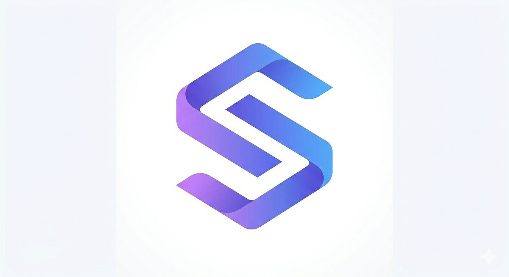

Import
Start from an active sprint, future sprint, JQL scope, or single issue lookup.

Comparative estimation for Agile teams. Reduce sprint planning complexity while improving delivery predictability without changing Jira workflow. Use real delivery data as anchors for future estimation.
Workflow
Start from an active sprint, future sprint, JQL scope, or single issue lookup.
Select which story is more complex, or mark two stories as similar.
Use hidden historical anchors, or guide thresholds when reliable history is missing.
Review the final board and publish only current issue estimates to Jira.
For teams
StoryScale helps product owners, scrum masters, and engineering teams estimate a bounded slice of work without hiding the final decision from the humans in the room.
Trust
StoryScale runs as an Atlassian Forge app, uses Jira permissions, stores session snapshots in Forge Storage, and writes Story Points only after explicit confirmation.
Read trust notes